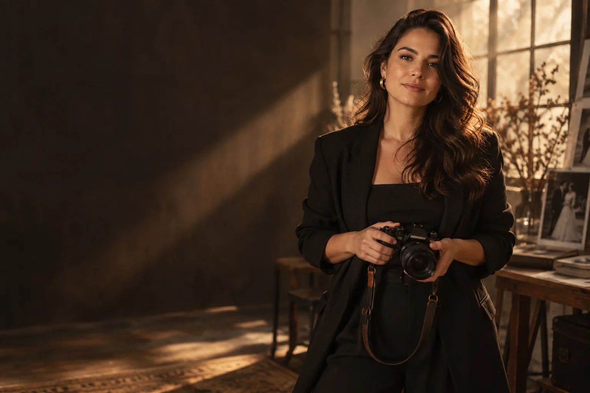

01 / HISTÓRIAS DE AMOR
Casamentos
Da ansiedade antes da cerimônia à celebração que atravessa a noite sob a luz dourada.

PARA LEMBRAR COMO FOI SENTIR
Fotografia para guardar os encontros, os abraços e tudo aquilo que o tempo não deveria levar.
A VIDA ACONTECE NOS DETALHES
Cada história tem seu próprio ritmo. Meu trabalho é perceber o que acontece entre os grandes momentos — e transformar isso em memória.
HISTÓRIAS EM COLEÇÕES
Navegue pelas galerias por categoria e sinta a atmosfera de cada celebração.
Da ansiedade antes da cerimônia à celebração que atravessa a noite sob a luz dourada.
A vibração de quem conquistou o diploma ao lado de quem torceu e caminhou junto.
A doce espera, a luz natural da tarde e o aconchego dos primeiros preparativos.
Risadas soltas, brincadeiras no jardim e a beleza dos laços de verdade.
UMA FORMA DE OLHAR
Não precisa posar para uma memória ser bonita. Precisa viver.
ATELIÊ MEMÓRIA / FOTOGRAFIA AUTORALPRAZER, SOU A LIA
Sou fotógrafa apaixonada pelas histórias que não cabem em poses prontas. Gosto de chegar perto, ouvir com calma e deixar espaço para que tudo aconteça naturalmente.
Seja a festa de uma conquista ou a quietude de uma tarde em família, fotografo para que você se reconheça nas imagens — hoje e daqui a muitos anos.
DO PRIMEIRO OI À ENTREGA
Para você aproveitar o momento. Eu cuido de guardar o resto.
Você me conta o que está imaginando. Falamos de data, pessoas, lugar e do que é importante para você.
No dia, conduzo com delicadeza quando for preciso e deixo os momentos acontecerem com liberdade.
As fotografias são escolhidas e tratadas com cuidado para contar a história inteira, com começo, meio e sentimento.
PARA CADA TAMANHO DE HISTÓRIA
Cada proposta é ajustada à data, local e duração. Veja por onde podemos começar.
01 / ENSAIO
Para gestantes, famílias, casais e retratos em um encontro sem pressa.
02 / CELEBRAÇÃO
Para cerimônias, formaturas, chá de bebê e encontros que merecem um registro completo.
03 / HISTÓRIA INTEIRA
Uma cobertura pensada para casamentos e celebrações com mais tempo e detalhes.
Escopo, prazo de entrega e valores são definidos no orçamento de cada projeto.
ANTES DE COMEÇAR
Se ficou faltando alguma coisa, me escreva. A conversa é sempre o melhor começo.
Tenho outra perguntaNão. A proposta é criar um ambiente tranquilo para você ser quem é. Se precisar de direção, eu ajudo com orientações simples, sem poses rígidas.
Sim. O local pode ser combinado na conversa inicial; eventuais deslocamentos entram na proposta personalizada.
O prazo varia conforme o tipo e o tamanho da cobertura. Informo a previsão na proposta antes da contratação.
Sim. A possibilidade de álbum físico pode ser incluída na proposta, com formato e acabamento escolhidos para sua história.
Começamos com uma conversa sobre sua data e o que você deseja registrar. Depois envio uma proposta com escopo e condições para a reserva.
SEU PRÓXIMO CAPÍTULO
Conte o que você quer celebrar. Pode ser uma grande festa ou uma tarde comum que merece ser lembrada.
Preencha os detalhes para preparar sua mensagem.